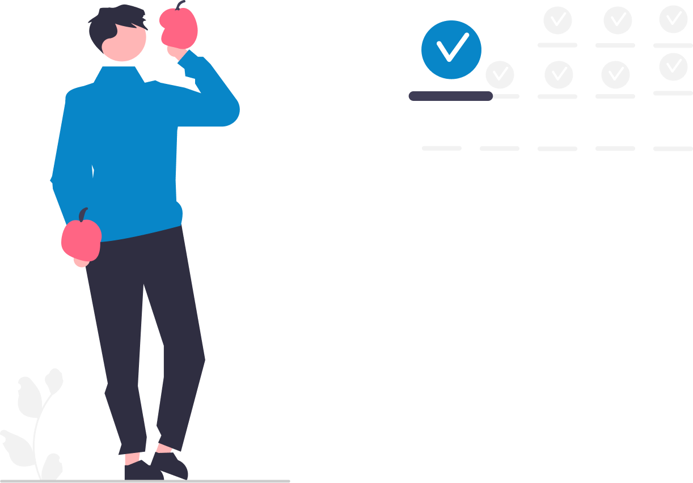

Getting Started
1
Identify one scar tissue pattern
1 week
2
Deploy one AI worker
2-4 weeks
3
Measure, refine, encode next pattern
Ongoing
4
Repeat until institutional knowledge is preserved
12-18 months
